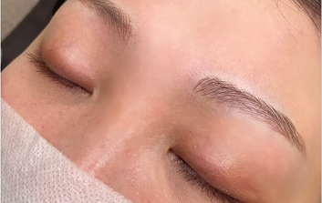

毛並み眉
¥55,000
/回
眉アートメイクは、皮膚の浅い層に専用の色素を注入して、眉の形や色を整える医療技術です。
従来の眉メイクとは異なり、汗や水で落ちることがなく、自然で美しい眉を維持することができます。
眉アートメイクでは、専用の針を用いて、皮膚表面から0.02mm〜0.04mm程度の浅い層に医療用色素を注入し、理想的な眉の形を作り出します。
刺青（タトゥー）よりも浅い皮膚層に色素を注入するため、時間の経過とともに自然に薄くなっていく特徴があります。
より自然で美しい仕上がりと、色素の定着を確実にするため、アートメイクは2回の施術を基本としています。
1回目では基本的な形と色を作り、2回目でより細やかな調整を行います。
「うまく描けない」「左右バランスがとれない」といった悩みを解消できます。
朝の時短に直結。眉を描く手間が省けるため、忙しい朝にゆとりが生まれます。
アートメイクアーティストが、お顔立ちや骨格に合わせて最適な眉デザインをご提案します。
プールやジム、夏の汗などでも眉が消える心配がなく、常に美しい状態をキープできます。
ふと鏡を見たとき、誰かに見られたとき。いつでも自信を持てる、洗練された美しさを。
LaLaは4つの強みで理想の眉アートメイクをご提供します。
「黄金比＝理想の眉」と思われがちですが、それだけではお好みのデザインにはなりません。
LaLaのアートメイクアーティストは、お顔全体のバランスはもちろん、骨格やパーツの配置、髪や瞳の色、肌のトーンなどを細かく確認したうえで、丁寧なカウンセリングを行い、ご希望のイメージを大切にしたデザインをご提案します。
当院のアートメイクアーティストは、看護師の資格を持ち、医療アートメイクの専門的な知識と豊富な経験を持つプロフェッショナルです。
解剖学的知識に基づいた安全な施術はもちろん、美容の観点からも先進的な技法とトレンドを学び続けています。
当院のアートメイクでは、EUなどの世界各国で認定済みの、最高レベルに品質と安全性が高い色素を使用しています。
また、施術前に麻酔クリームを使用し、痛みを軽減した状態で施術を行います。
気になることや万が一のトラブルがあった場合は、LINEで問い合わせることができ、迅速に対応できる体制を整えています。
眉アートメイクには、手彫りと機械彫り（マシン彫り）の2種類の技法があります。
当院では、施術前の丁寧なカウンセリングを通じて、最適な彫り方をご提案しています。
毛の1本1本を手で彫る技法で、毛並みの強弱や毛の流れを再現できるため、自然な仕上がりになります。
毛並み眉やナチュラルな眉のデザインの場合に用います。皮膚が薄い方や敏感肌の方に向いています。
ペン型のマシンを使って高速で針を動かして、均一に彫る技法です。
パウダー状のやわらかな眉を表現できます。手彫りと比較して施術時間が短く、痛みが少ないという特徴があります。
当院の眉アートメイクでは、お客様のご希望や眉の状態に合わせてお選びいただける、
3つの施術タイプをご用意しています。
毛並み眉は、極細の専用針を使用して、眉毛の流れに沿って一本一本の毛流れを再現するように描いていく技法です。
繊細で自然な仕上がりになるため、ナチュラルメイクを好まれる方や、もともとの眉毛が少ない方に人気があります。
パウダー眉は、パウダーでメイクしたようなふんわりとした印象に仕上げる技法です。
くっきりしすぎず、柔らかく優しい印象になるため、大人っぽさや落ち着きを演出したい方におすすめです。
ミックス眉は、毛並み眉とパウダー眉の良いところを組み合わせた、最も人気の高い施術方法です。
まず毛並み技法で自然な毛流れを作り、その上からパウダー技法で立体感とボリューム感をプラスします。
LINEから簡単にご予約いただけます。事前の質問やご相談もLINEでお気軽にお問い合わせください。
問診票へのご記入、施術にあたっての重要事項のご説明、お肌に関するヒアリングなどを行います。
経験豊富な医師が診察を行い、当日のご体調やお肌の状態、アレルギーの有無などを確認します。
施術中の痛みを軽減するため、施術箇所に麻酔クリームを塗布します。
ご希望のデザインや眉に関するお悩みを丁寧にお伺いします。お好みの雰囲気や普段のメイクなども考慮しながら、理想の眉の形や色味にすり合わせていきます。
お顔の骨格や表情筋などのバランスを見ながら、黄金比を活用してデザインを施します。鏡でご確認いただきながら細かく調整し、ご納得いただけるデザインに仕上げていきます
決定したデザインに沿って、丁寧に色素を入れていきます。施術中もお声がけを行いながら、リラックスした状態で受けていただけるように配慮を徹底しています。
施術の完了後、受付にてお会計していただきます。次回予約のご希望日がある場合はスタッフにお知らせください。
アートメイクの施術は医療機関でのみ行える医療行為です。美しい仕上がりと安全性を両立させるためには、施術前後のケアや注意点を正しく理解し、医師・看護師の指示に従うことが不可欠です。以下の各項目を必ずご確認ください。
アートメイクではごく稀に、腫脹や疼痛、内出血、感染や創傷治癒の遅延、瘢痕化、アレルギー、ケロイド、色素沈着、色素不定着、色素の変性や拡散麻酔によるトラブル(紅斑、発疹、水疱、蕁麻疹、浮腫、ものもらい、角膜損傷、視力低下)、その他予測不能な事象などの副作用が起こる場合があります。万が一このようなトラブルが起きた際は医師が迅速に対応します。気になることがありましたら、お気軽にお問い合わせください。
下記の方は施術を受けることができません。
下記の方は、事前にかかりつけ医とご相談のうえ、ご予約ください。
他にご心配な点がある方は、必ず医師にご相談ください。また、目元の美容整形やお顔の美容施術を受けられた方、ご検討中の方は、必ず予約の際にお申し出ください。
はい、カウンセリングは無料で承っております。施術前に不安な点や疑問点をすべて解消していただけるよう、丁寧にご説明させていただきます。カウンセリング当日の施術も可能ですが、一度お持ち帰りいただいてゆっくり検討していただくことも可能です。
個人差はありますが、通常1〜3年程度持続します。肌質や生活習慣により変動しますので、定期的なメンテナンスをおすすめしています。1年に1回程度のリタッチで、きれいな状態を保つことができます。
施術前に表面麻酔を使用しますので、痛みは最小限に抑えられます。個人差はありますが、多くの方が「思ったより痛くなかった」とおっしゃいます。痛みに弱い方は事前にお申し出ください。麻酔の量を調整させていただきます。
施術前日は飲酒を控え、十分な睡眠をとってください。また、施術部位の日焼けも避けてください。血液をサラサラにする薬を服用されている方は、事前にご相談ください。
普段通りのメイクでお越しください。普段のメイクを参考に、デザインを決めさせていただきます。ただし、施術部位のメイクは施術前にオフさせていただきます。
カウンセリングから施術完了まで、眉の場合は約3時間、リップの場合は約3.5時間程度です。初回は特に丁寧にカウンセリングを行うため、お時間に余裕を持ってお越しください。
施術直後から24時間は極力水に濡らさないようにしてお過ごしいただくようお願いしております。また、施術後1週間は代謝の上がるようなスポーツ・温泉・岩盤浴などはお控えいただきますようお願いいたします。施術部位のお化粧は1週間お控えいただく必要があり、お帰りの際にお渡ししているアフターケアクリームを塗布いただくようお願いいたします。詳細につきましては、施術当日ご説明とともにアフターケアシートをお渡しさせていただきます。
医師・医学博士
東京医科歯科大学（現：東京科学大学）卒業
日本整形外科学会 専門医